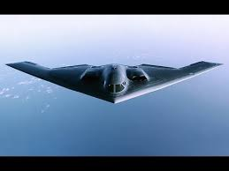
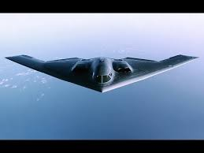
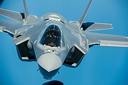
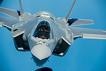

Stealth aircraft - an overview.
 

 

| SR-71 Black Bird | B-21 Stealth Bomber | F-22 Stealth Figher | F-35 Stealth Figher |
|---|---|---|---|
| Soviet-Erra Spy Machine - Now Obsolete | Sputnik Magazine Says "We can still shoot it down." | Heart (and Bank) Breaker - Discontinued Because of the Dough | The Current Stealth Fighter |
The History of Stealth Aircraft
In 1975, engineers at found that an aircraft made with faceted surfaces could have a very low radar signature because the surfaces would radiate almost all of the radar energy away from the receiver. Lockheed built a model called "the Hopeless Diamond", a reference to the famous Hope Diamond and the design's predicted instability.
Because advanced computers were available to control the flight of such un-erodynamic aircraft, weapons like the stealth-bomber and the SR-71 spy plane have evolved.
Nowadays, these aircraft have gotten prettier, but unfortunately no cheaper. One of the best stealth fighers ever built- the F-22 Raptor - costs 227 million to construct. Due to the exorberant cost, the US military cancelled the contract with Lockheed Martin, belaying further production of the F-22 and instead relying on the significantly cheaper F-35 Stealth figher.